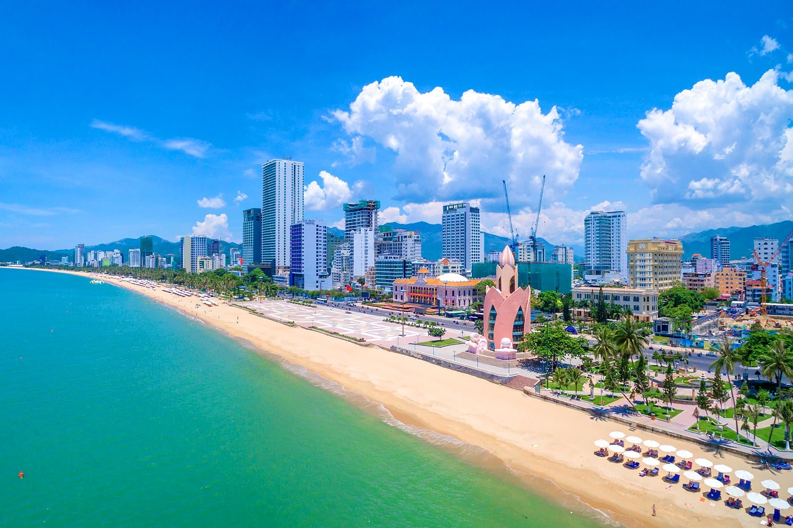
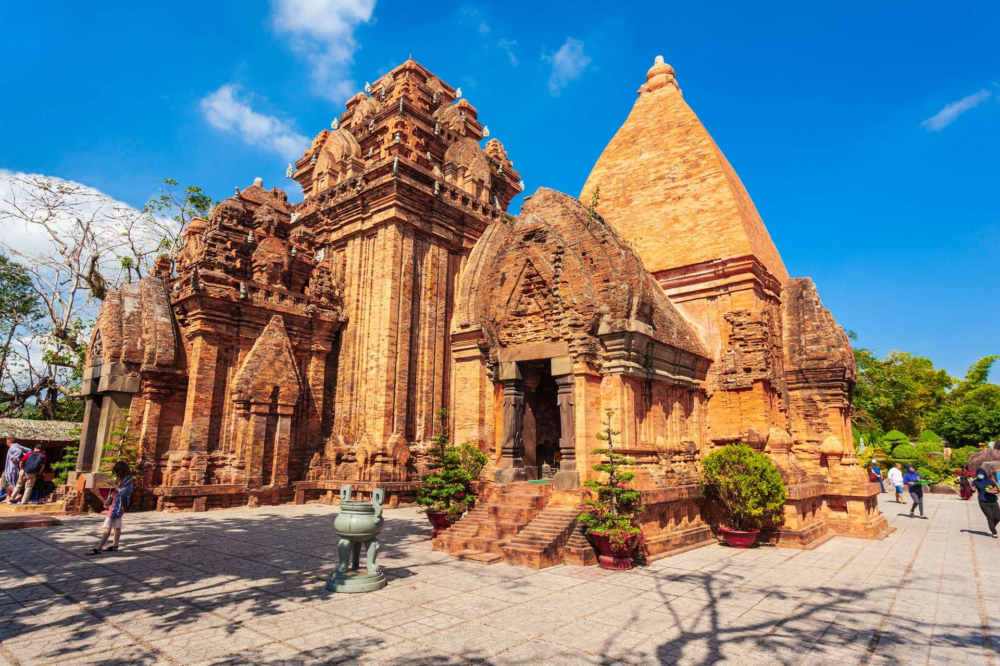
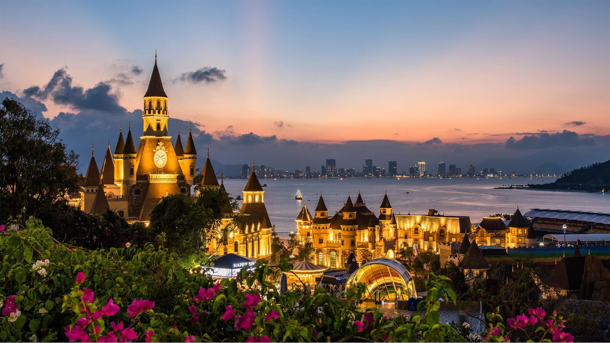
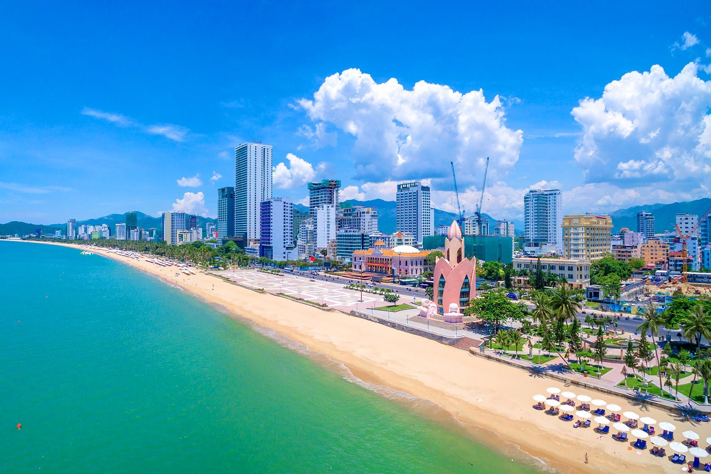
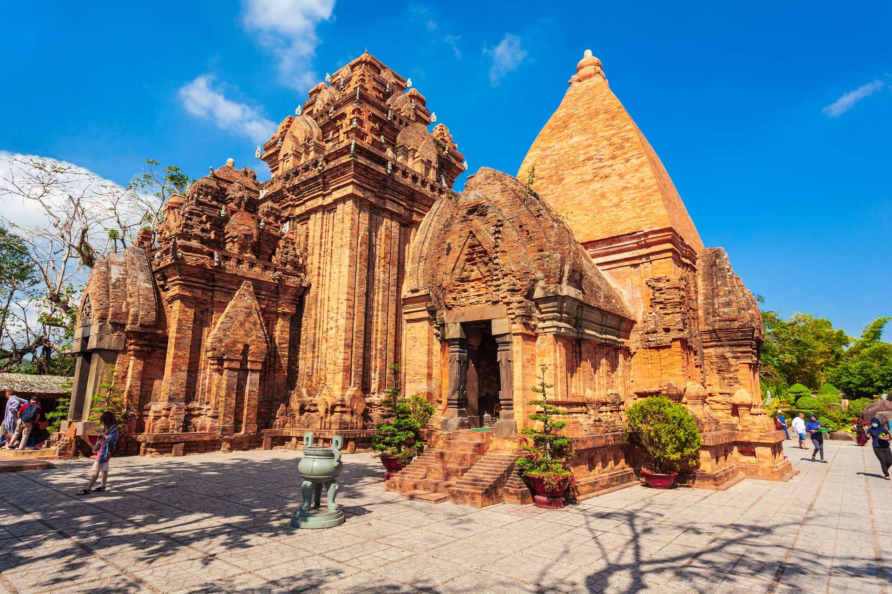
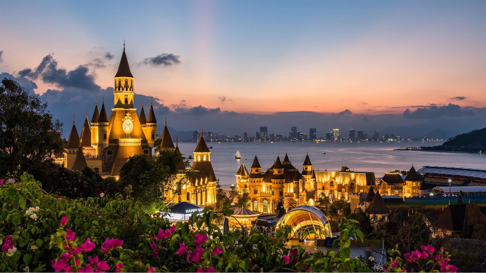

Văn hóa/Lịch sử
Ẩm thực: Nơi đây nổi tiếng với hải sản tươi ngon, cùng với các món ăn đặc trưng của vùng biển. Một số món ăn đặc sản của Khánh Hòa mà bạn không nên bỏ lỡ khi đến đây bao gồm: bún cá Sứa, bún mắm, nem nướng Nha Trang, bánh căn, bánh ướt lòng gà, bánh xèo, và nhiều món hải sản khác như bò né, sò điệp, cá hồi,... Đặc biệt, nếu bạn có cơ hội tham gia vào lễ hội hải sản Nha Trang diễn ra hàng năm, bạn sẽ được thưởng thức hải sản tươi ngon, được chế biến theo nhiều cách khác nhau và mang hương vị đặc trưng của vùng biển.
Công trình, kiến trúc: Có nhiều công trình kiến trúc nổi tiếng và đẹp mắt, trong đó có một số công trình như: Tháp Po Nagar, Vinpearl Land Nha Trang, Nhà thờ Da Bà, Dinh Thống Nhất.
Văn hóa Văn hóa của Khánh Hòa được thể hiện qua các hoạt động truyền thống như lễ hội, nghệ thuật dân gian, ẩm thực đặc trưng và các trang phục truyền thống. Lễ hội tại Khánh Hòa được tổ chức đều đặn và đa dạng, từ lễ hội biển Nha Trang đến lễ hội cúng cô hồn hay lễ hội chùa Long Sơn. Ngoài ra, nhiều sự kiện văn hóa, nghệ thuật và giải trí cũng được tổ chức thường xuyên, thu hút đông đảo du khách đến với tỉnh này. Ngoài ra, văn hóa ẩm thực của Khánh Hòa cũng đa dạng và đặc trưng, với nhiều món đặc sản như nem nướng, bún cá sứa, ốc hương nướng mỡ hành, chả cá và bún chả cá.
 




